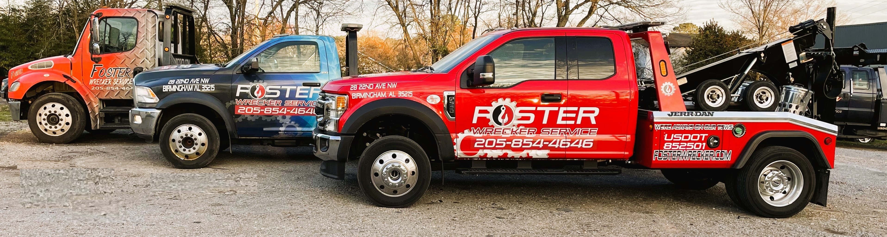
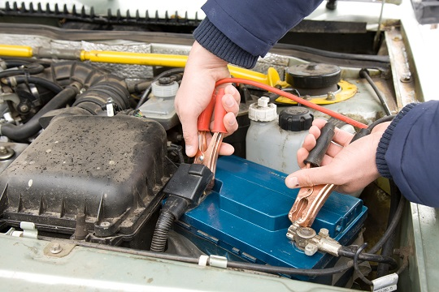

We offer services for:
- Towing
- Winching
- Jump Starts
- Unlocks
- Roadside Assistance
If you find yourself involved in an accident or stranded, simply give us a call for all your roadside assistance needs. Our team of professional and experienced drivers handles accidents on a daily basis and understands the importance of swiftly removing your vehicle from the road. We are dedicated to providing comprehensive support to make this experience as stress-free as possible for you.
Foster Wrecker Service has been a trusted provider of towing, roadside assistance, and wrecker services for over 40 years in Center Point, Birmingham, Trussville, and the surrounding areas. You can rely on our expertise and commitment to excellence. Let us take care of you during this challenging time.
 
Contact Us
For immediate assistance or to schedule a tow, please contact us:
Phone: 205-854-4646